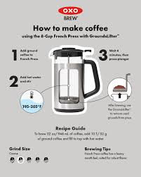

Learn to Make Coffee
Master the art of brewing the perfect cup at home with our step-by-step guide using a French press.
French Press Coffee Recipe
- Boil fresh water and let it cool slightly to 195-205°F (90-96°C).
- Measure 1-2 tablespoons of coarsely ground coffee per 6 oz of water.
- Add coffee grounds to the French press.
- Pour the hot water over the grounds and stir gently.
- Place the lid on the press but do not plunge yet; let it steep for 4 minutes.
- Slowly press the plunger down to separate the grounds from the coffee.
- Pour and enjoy immediately!
Tip: Adjust steeping time and coffee-to-water ratio to suit your taste.

Brewing Tips
- Use filtered water for the best taste.
- Store coffee beans in an airtight container to maintain freshness.
- Experiment with different grind sizes for varied flavor profiles.
Watch Our Tutorial
Learn more about brewing techniques in our video:
Additional Resources
Frequently Asked Questions
Q: How do I clean my French press?
A: Disassemble the press and rinse all parts with warm water. Use a soft brush to clean the mesh filter.
Q: Can I use pre-ground coffee?
A: Yes, but freshly ground coffee will yield better flavor and aroma.
Q: How long can I store coffee beans?
A: Store in an airtight container in a cool, dark place for up to two weeks for optimal freshness.